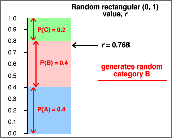

If you don't want to print now,
Population and census
We often want to find information about a particular group of individuals (people, fields, trees, bottles of beer or some other collection of items). This target group is called the population.
Collecting measurements from every item in the population is called a census. A census is rarely feasible, because of the cost and time involved.
Simple random sample
We can usually obtain sufficiently accurate information by only collecting information from a selection of units from the population — a sample. Although a sample gives less accurate information than a census, the savings in cost and time often outweigh this.
The simplest way to select a representative sample is a simple random sample. In it, each unit has the same chance of being selected and some random mechanism is used to determine whether any particular unit is included in the sample.
Sampling from a population of values
It is convenient to define the population and sample to be sets of values (rather than people or other items). This abstraction — a population of values and a corresponding sample of values — can be applied to a wide range of applications.
Variability
Sampling from a population results in sample-to-sample variability in the information that we obtain from the samples.

Sample information about the population
In practice, we only have a single sample and this provides incomplete information about the population.

Effect of sample size
Bigger samples mean more stable and reliable information about the underlying population.
Estimating means and proportions
A random sample is often used to estimate some numerical characteristic of the population, such as...
The difference between an estimate and the population value being estimated is called its sampling error.

Effect of sample size on sampling error
The larger the sample size, the smaller the sampling error. However when the population is large, sampling a small proportion of the population may still give accurate estimates.
Sampling error depends much more strongly on the sample size than on the proportion of the population that is sampled.
For example, a sample of 10 from a population of 10,000 people will estimate the proportion of males almost as accurately as a sample of size 10 from a population of 100.
The cost savings from using a sample instead of a full census can be huge.
Different sampling schemes
Two different ways to collect a random sample of n values from a finite population of size N are common. In both sampling schemes, each population value has the same chance of being in the sample.
Since a SWR may contain the same population value more than once, it covers less of the population than SWOR. SWOR therefore gives more accurate estimates of population characteristics.
Large populations and/or small samples
If the sample size, n, is much smaller than the population size, N, there is little practical difference between SWR and SWOR — there would be little chance of the same individual being picked twice in SWR.
Selecting a sample manually (raffle tickets)
This method is rarely used in research applications.
Selecting a sample with random numbers
To select a random sample without replacement using random numbers,
Random number between 0 and k
The easiest way to generate a random number between 0 and 357 is to use a spreadsheet such as Excel — it has a function designed for this purpose, "=RANDBETWEEN(0, 357)". A computer-generated random value is strictly called a pseudo-random number.
If a computer is not available, a sequence of random digits can be generated:
|
 |
A random number that is equally likely to have any value between 0 and 357 can be found by repeatedly generating 3-digit numbers (between 0 and 999) until a value between 0 and 357 is obtained.
Generalising from data
Most data sets do not arise from randomly sampling individuals from a finite population. However we are still rarely interested in the specific individuals from whom data were collected.
The recorded data are often 'representative' of something more general.
The main aim is to generalise from the data.
Randomness of data
Not only do we usually have little interest in the specific individuals from whom data were collected, but we must also acknowledge that our data would have been different if, by chance, we had selected different individuals or even made our measurements at a different time.
We must acknowledge this sample-to-sample variability when interpreting the data. The data are random.
All graphical and numerical summaries would be different if we repeated data collection.
This randomness in the data must be taken into account when we interpret graphical and numerical summaries. Our conclusions should not be dependent on features that are specific to our particular data but would (probably) be different if the data were collected again.
The more data that we collect, the more accurately our data will reflect population characteristics, but randomness always exists.
Data that are not sampled from a finite population
There is no real finite population underlying most data sets from which the values can be treated as being sampled. The randomness in such data must be explained in a different way.
Sampling from an abstract population
"Random sampling from a population" is also used to explain variability even when there is no real finite population from which the data were sampled.
We imagine an abstract population of all values that might have been obtained if the data collection had been repeated. We can then treat the observed data as a random sample from this abstract population.
Defining such an underlying population therefore not only explains sample-to-sample variability but also gives us a focus for generalising from our specific data.
Sampling from a population
Sampling from an underlying population (whether finite or infinite) gives us a mechanism to explain the randomness of data. The underlying population also gives us a focus for generalising from our sample data — the distribution of values in the population is fixed and does not depend on the specific sample data.
Unknown population
Unfortunately the population underlying most data sets is unknown and, in practice, we only have a single sample. However this single sample does throw light on the population distribution.
The diagram below describes a sample from a categorical distribution. Although the underlying population is unknown, the sample proportion of successes, p, is an estimate of the unknown proportions of successes in the population (denoted by π).

Probabilities for a finite population
Random sampling from populations is described using probability. If one value is sampled from a finite population of N distinct values, we say that
Many populations contain values that occur more than once. When sampling from any population,
The probability that a single sampled value is either x, y, ... is the proportion of population values that are either x, y, ... .
For numerical populations, the most useful form of this result is:
Prob( a < X < b ) = propn of values between a and b.
Probability and population proportion
When sampling from any population, whether finite or infinite,
The probability of sampling any value or range of values equals the proportion of these values in the population.
Probability and long-term proportion
An alternative but equivalent way to think about probability arises when we can imagine repeatedly selecting more and more values from the population (e.g. repeating an experiment). The probability of any value or range of values is the limiting proportion of these values as the sample size increases.

The equivalence of the two definitions is called the law of large numbers.
Describing categorical and discrete populations
Categorical and discrete samples can be described graphically with bar charts of the proportions for the distinct values. Since probabilities are defined to be population proportions, the underlying population can also be described by a bar chart.

Bar charts and the law of large numbers
The law of large numbers states that sample proportions approach the underlying probabilities as the sample size increases. This means that a sample bar chart will be close in shape to the unknown population bar chart if the sample size is big enough.
Histograms and probability density functions
The situation is a little more complicated for continuous numerical populations and samples. A standard histogram could be used to describe the population in the same way that it might be used for a sample:

However with an infinite population, we can narrow the histogram classes beyond what would be reasonable for a finite sample. Indeed, class widths can be reduced indefinitely, resulting in a smooth histogram called a probability density function. This is often abbreviated to a pdf.

Probability density functions are still essentially histograms and share all properties of histograms.
Shape of a probability density function
A probability density function is usually a fairly smooth curve, though a single sample histogram provides limited information about its likely shape.

Normal distributions
One flexible group of continuous probability density functions is the family of normal distributions. Normal distributions:
Changing the parameters µ and σ changes where the distribution is centred and its spread, but its shape remains otherwise the same.
The parameters are often estimated from a sample. Details will be given later, but the resulting normal pdf will be close in shape to a histogram of the sample data.

Probabilities from a histogram
In the histogram of any finite sample or population, the area above any class is the proportion of values in the class.

Probabilities from a probability density function
Since a probability density function (pdf) is a type of histogram, it satisfies the same property.
The probability that a sampled value is within two values, P(a < X < b), equals the area under the pdf.
This is the key to interpreting pdfs.

For any events, A and B, the following properties always hold.
Probabilities are always between 0 and 1
0 ≤ P(A) ≤ 1
Meaning of probabilities 0 and 1
If the event A cannot happen then P(A) = 0
If the event A is certain to happen then P(A) = 1
Probability that an event does not happen
P(A does not happen) = 1 - P(A)
Addition law
When two events cannot happen together, they are said to be mutually exclusive. If A and B are mutually exclusive,
P(A or B) = P(A) + P(B)
If the events A and B are not mutually exclusive,
P(A or B) < P(A) + P(B)
Independence
When sampling with replacement from a finite population, the choice of each value does not depend on the values previously selected. The successive values are then called independent. This also holds when sampling from an infinite population (distribution).
On the other hand, if sampling without replacement from a finite population, successive sample values are not independent since the second value selected cannot be the same as the first value, so knowing the first value affects the probabilities when the second value is selected.
Data sets with two categorical variables
Bivariate categorical data sets are usually summarised with a contingency table.
For example, a study examined 62 patients who had been given a prescription medicine for some condition. Each patient was classified by whether they had complied with the treatment prescribed and by racial group:
| Race | Compliers | Non-compliers | Total |
|---|---|---|---|
| White | 13 | 10 | 23 |
| Non-white | 13 | 26 | 39 |
| Total | 26 | 36 | 62 |
Joint probabilities
Bivariate categorical data can be modelled as a random sample from an underlying population of pairs of categorical values. The population proportion for each pair (x, y) is denoted by pxy and is called the joint probability for (x, y).
In games of chance, we can often work out the joint probabilities. For example, if a gambler draws a card from a shuffled deck and also tosses a coin, there are eight possible combinations,

Probabilities for a single variable
A model for two categorical variables is characterised by the joint probabilities pxy.
The marginal probability, px, for a variable X is the proportion of (x, y) pairs in the population with X = x . This can be found by adding all joint probabilities for pairs with this x-value.

There is a similar formula for the marginal probabilities of the other variable,

Example
In the following example, the marginal probabilities for X are the row of totals under the table, and the marginal probabilities for Y are the column of totals on the right.
| Variable X | ||||
|---|---|---|---|---|
| Variable Y | X = A | X = B | X = C | Total |
| Y = 1 | 0.2576 | 0.1364 | 0.1212 | 0.5152 |
| Y = 2 | 0.0909 | 0.0758 | 0.0152 | 0.1818 |
| Y = 3 | 0.0455 | 0.0758 | 0.0606 | 0.1818 |
| Y = 4 | 0.0152 | 0.0303 | 0.0758 | 0.1212 |
| Total | 0.4091 | 0.3182 | 0.2727 | 1.0000 |
Probabilities in a sub-population
Conditional probabilities for Y, given X = x
The general definition of the conditional probabilities for Y given that the value of X is x is

They can be found by rescaling of that row of the table of joint probabilities (dividing by px) so that the row sums to 1.0.

Two sets of conditional probabilities
Conditional probabilities for X given that Y has the value y are defined in a similar way:

You should be careful to distinguish between px | y and py | x.
The probability of being pregnant, given that a randomly selected person is female would be fairly small. The probability of being female, given that a person is pregnant is 1.0 !!
Proportional Venn diagrams
A proportional Venn diagram is drawn from the marginal probabilities of one variable and the conditional probabilities for the other variable,

Rewriting the definition of conditional probabilities,

The area of any rectangle in the diagram therefore equals the joint probability of the categories it represents.
An alternative proportional Venn diagram can be drawn from the marginal probabilities of Y and the conditional probabilites of X given Y. The area for the rectangle corresponding to any (x, y) is its joint probability, pxy.
Example
The table below is based on the world population in 2002, categorised by region and by age group. It shows the joint probabilities for a randomly chosen person being in each age/region category.
| Age | |||
|---|---|---|---|
| 0-19 | 20-64 | 65+ | |
| Africa and Near East | 0.085 | 0.073 | 0.006 |
| Asia | 0.215 | 0.315 | 0.035 |
| America, Europe and Oceanea | 0.084 | 0.158 | 0.030 |
The two proportional Venn diagrams are shown below.

Note that the areas are the same in both diagrams — they are simply rearranged.
Relationships
The relationship between two numerical variables can be summarised by a correlation coefficient and least squares line. Two categorical variables may also be related.
We say that two categorical variables are associated if knowledge of the value of one tells you something about the likely value of the other.
If the conditional distribution of Y given X = x depends on the value of x, we say that X and Y are associated.
Example
We illustrate the idea of association with an artificial example relating athletic performance of high school children to their weight. The table below shows the joint probabilities for these children.
| Athletic performance | ||||
|---|---|---|---|---|
| Poor | Satisfactory | Above average | Marginal | |
| Underweight | 0.0450 | 0.0900 | 0.0150 | 0.1500 |
| Normal | 0.0825 | 0.3025 | 0.1650 | 0.5500 |
| Overweight | 0.0500 | 0.1200 | 0.0300 | 0.2000 |
| Obese | 0.0300 | 0.0650 | 0.0050 | 0.1000 |
| Marginal | 0.1700 | 0.5400 | 0.2900 | 1.0000 |
A proportional Venn diagram displays the conditional probabilities for performance, given weight category, graphically.

If we know that a child has normal weight, there is a higher probability of having above average athletic performance than an overweight child. Since the conditional probabilities for performance, given weight are different for different weight categories, the two variables are associated.
Independence
If the conditional probabilities for Y are the same for all values of X, then Y is said to be independent of X.
If X and Y are independent, knowing the value of X does not give us any information about the likely value for Y.
Example
An example of independence is given by the following table of joint probabilities for the weight category and mathematical ability of high school children.
| Mathematical performance | ||||
|---|---|---|---|---|
| Poor | Satisfactory | Above average | Marginal | |
| Underweight | 0.0225 | 0.1125 | 0.0150 | 0.1500 |
| Normal | 0.0825 | 0.4125 | 0.0550 | 0.5500 |
| Overweight | 0.0300 | 0.1500 | 0.0200 | 0.2000 |
| Obese | 0.0150 | 0.0750 | 0.0100 | 0.1000 |
| Marginal | 0.1500 | 0.7500 | 0.1000 | 1.0000 |
The proportional Venn diagram for this model is shown below.

The conditional probability of above average maths performance is the same for all weight categories — knowing a child's weight would not help you to predict maths performance. The two variables are therefore independent.
Mathematical definition of independence
If Y is independent of X, then:
Probability describes situations where a random sample is selected from a population. It is also used to model a variety of other situations involving randomness.
Tennis match
A simple model for a tennis match between two players, A and B, assumes that:
A more complex model might introduce more parameters to relax the assumption of independence.
Simulation
For any values of π1 and π2, we could randomly generate the results of successive points until a match was complete.
This generates an instance of the model and is called a simulation.
Repetitions of a simulation
Repeating a simulation and observing the variability in the results can give insight into the randomness of the system's behaviour.
Model for sport league
Consider a sports league of 10 teams in which each team plays each other twice and:
| Points from a match = | 3 if team wins 1 if team draws 0 if team loses |
We will model the league with a simple model for the results of individual matches. In it, team A has over twice the probability of winning than losing, but all other teams are equally matched.
Simulation
This model can be used to randomly generate the results of all 90 matches in the league.

Repeating the simulation 100 times gives the following results:

Despite team A being so much better than the other teams, the simulation shows that it has little more than 50% chance of ending the season on top of the league.
English Premier Soccer League in 2008/9
The table below shows the points gained by all teams in the English Premier Soccer League at the end of the 2008/9 season.
| Team | Pts | |
| 1 | Manchester United | 90 |
| 2 | Liverpool | 86 |
| 3 | Chelsea | 83 |
| 4 | Arsenal | 72 |
| 5 | Everton | 63 |
| 6 | Aston Villa | 62 |
| 7 | Fulham | 53 |
| 8 | Tottenham Hotspur | 51 |
| 9 | West Ham United | 51 |
| 10 | Manchester City | 50 |
| 11 | Wigan Athletic | 45 |
| 12 | Stoke City | 45 |
| 13 | Bolton Wanderers | 41 |
| 14 | Portsmouth | 41 |
| 15 | Blackburn Rovers | 41 |
| 16 | Sunderland | 36 |
| 17 | Hull City | 35 |
| 18 | Newcastle United | 34 |
| 19 | Middlesburgh | 32 |
| 20 | West Bromwich Albion | 32 |
Evidence of skill?
A quarter of the matches in 2008/9 were draws, so we will conduct a simulation with a model in which all teams are equally matched and:
From each simulated league, we will summarise the spread of points at the end of the season using both their range and their standard deviation. After 100 simulated leagues, these measures of spread are shown below.

The actual spread of points in the 2008/9 league was much higher than those that appeared in the simulations with equally matched teams, indicating that there was indeed a difference between the skill levels of the best and worst teams in the league.
Interpreting a graphical summary of a sample
Simulations can also help us to assess features such as outliers, clusters or skewness in a data set by examining how often they appear in random samples from a population without such features.
In particular, we can examine variability in samples from a normal distribution that closely matches the shape of the data set.

The amount of skewness in the the actual data (top) is rarely seen in simulated normal samples (such as that shown above). This informally suggests that the the population underlying the data really is skew and not symmetric.
Random values
Simulations are conducted by generating random values from the probability distributions in the model.
A computer program should normally be used to generate random values. The program Excel contains functions that can be used.
Generating categorical and numerical values is usually based on random values that are equally likely to take any value between 0 and 1. Such a value is said to come from a rectangular (or uniform) distribution between 0 and 1 and has the probability density function shown below.

A value can be generated from a rectangular distribution with the Excel function "=RAND()" or, by hand, by generating a sequence of random digits (e.g. by rolling a 10-sided die).
Generating a categorical value
A random category can be generated from a rectangularly distributed random value, r .
If P(success) is denoted by the symbol π, then a success will be generated if r is less than π. This can be generalised as illustrated in the diagram below:
